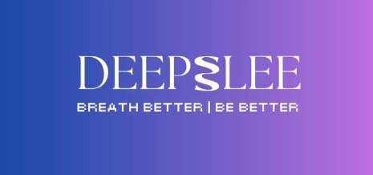
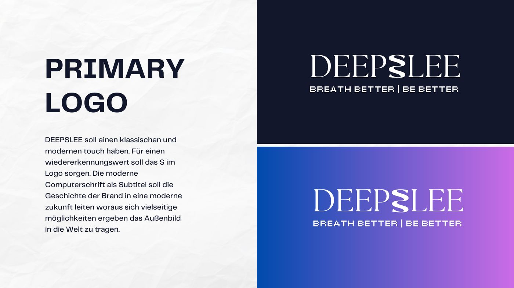
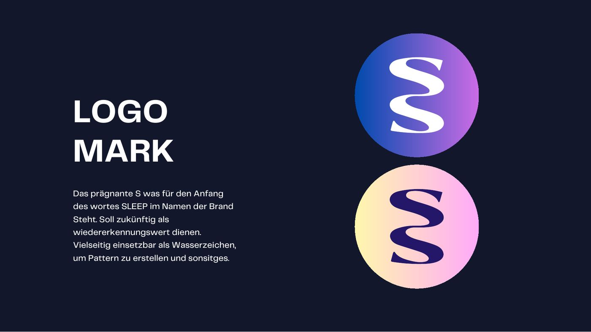
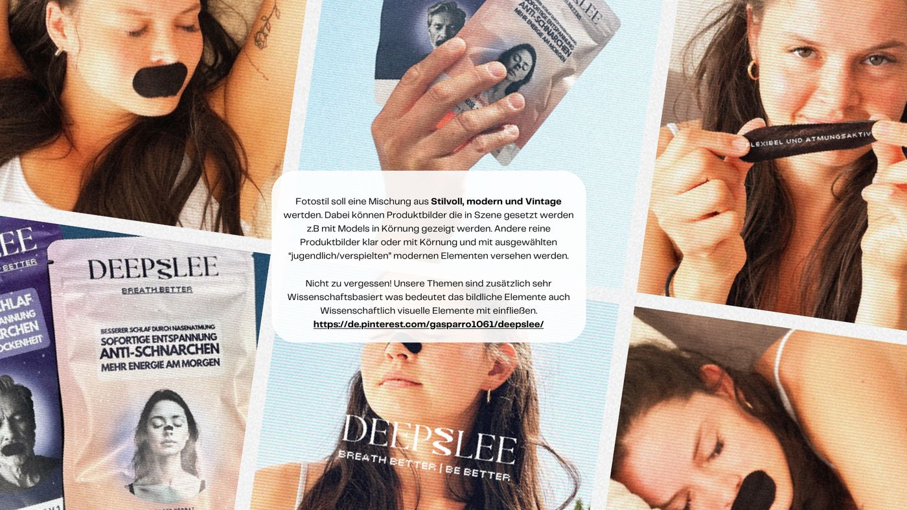
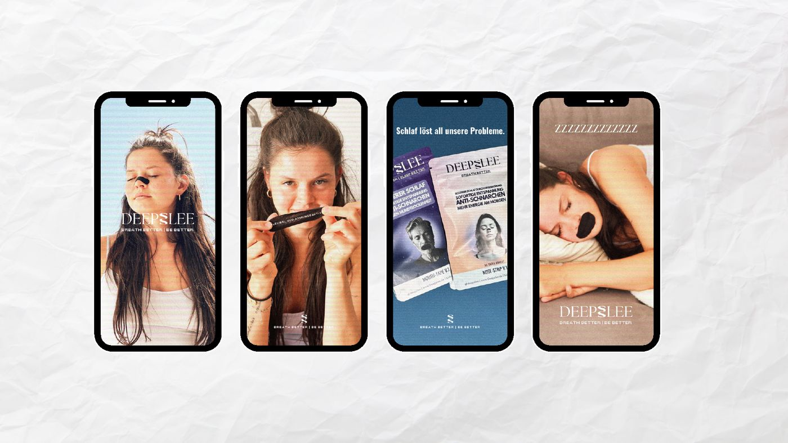
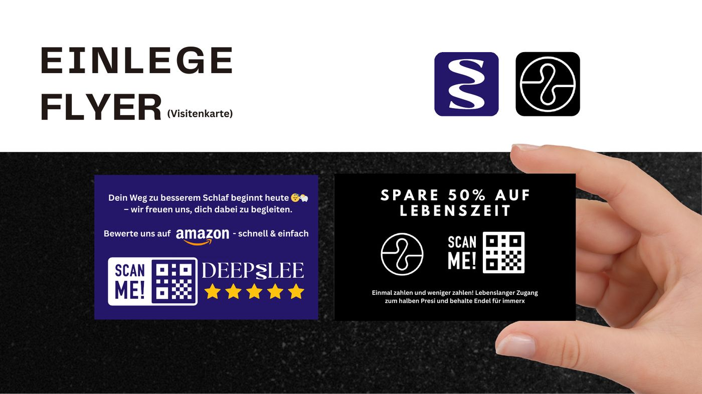

Struktur
- Strukturen und Abläufe für den Betrieb
- Kostenmodell und Cash-Conversion-Cycle
- Kennzeichnung der Verpackung
- Zertifikate und Pflichtangaben
Eine Marke rund um Atmung und Schlaf. Als Gründer habe ich das Markenhandbuch und das Marketingkonzept selbst entwickelt.
Die Idee
Jeder gute Tag beginnt mit erholsamem Schlaf.
Deepslee will Menschen das Thema Atmung näherbringen und sie in Sport und Schlaf positiv in den Alltag holen. Die Strategie: Produkte so einbauen, dass nach rund 90 Tagen eine feste Gewohnheit daraus wird.
Dazu kommt eine Community, die Wissen teilt, Ergebnisse zeigt und sportliche Wettkämpfe begleitet.

Was ich gemacht habe
Marketing-Konzept




